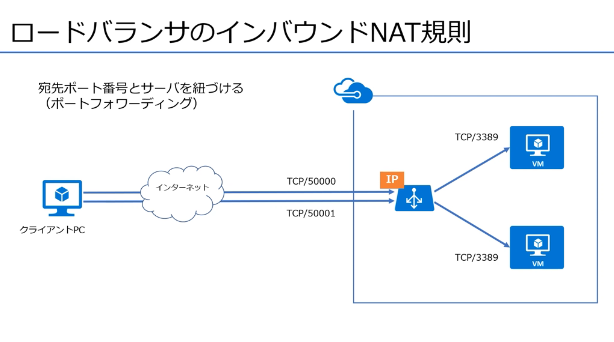
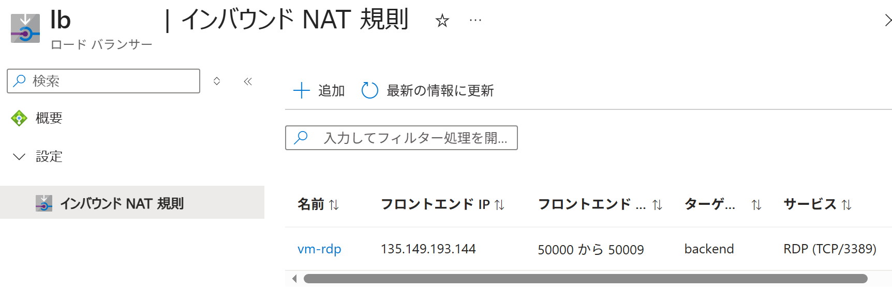
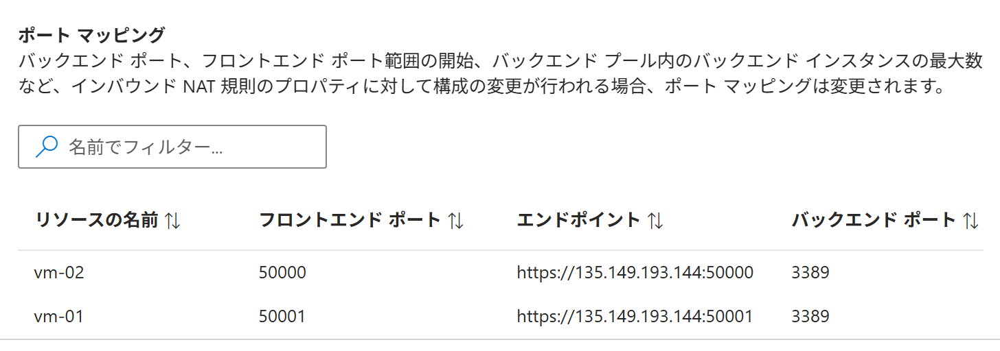
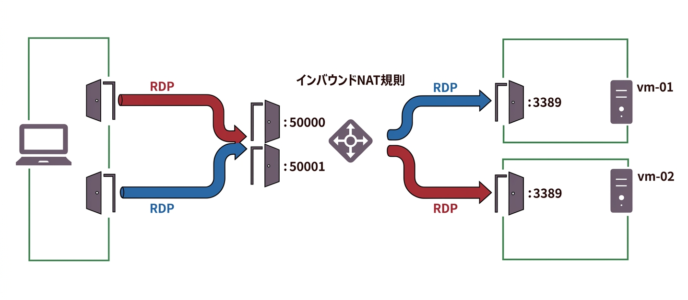
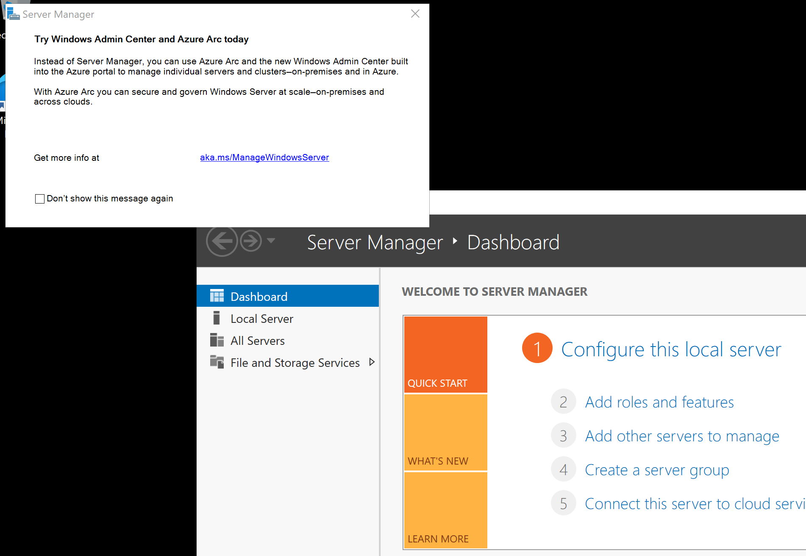
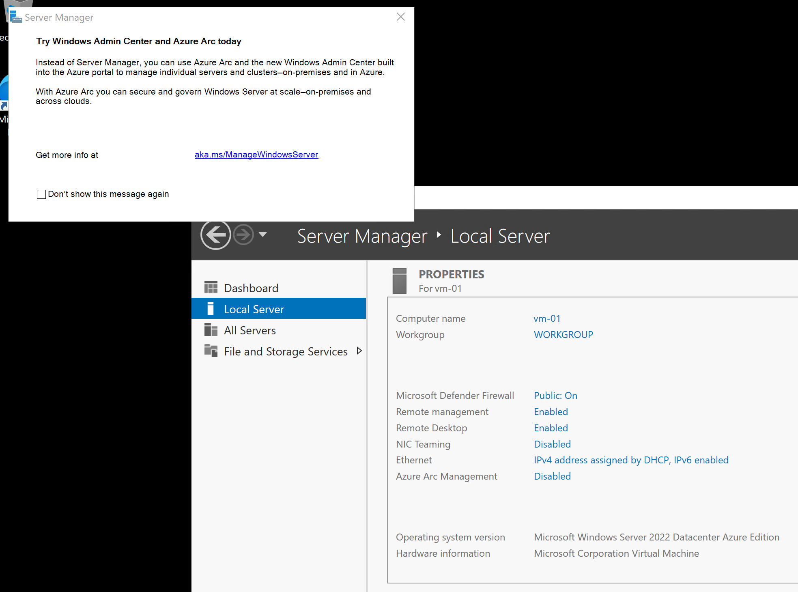

Azure ポータルで パブリックロードバランサー（インバウンド NAT 規則）を追加する
適用対象: ✔️ ロードバランサー
この演習では、Azure ポータルを使用して パブリックロードバランサー（インバウンド NAT 規則）を追加します。
所要時間: 約 10 分
先行の演習
この演習を始める前に パブリックロードバランサを作成する を完了してください。
タスク 1: インバウンド NAT 規則の追加
ロードバランサーに インバウンド NAT 規則を追加します。
インバウンド NAT 規則 は 負荷分散のための設定ではありません。
ここでの インバウンド NAT 規則 は、ロードバランサー経由で仮想マシンにリモートデスクトップ接続するための設定です。
仮想マシンへの接続を ロードバランサー経由の接続に限定したい などの目的です。
下図では、ロードバランサーの 50000 番ポートに接続があった場合、仮想マシンの 3389 番ポートに接続を転送（フォワーディング）しています。

- 上部の検索ボックスに
ロードバランサーと入力します。 - [ロードバランサー] を選択します。
- [msaz-lb] を選択します。
- サービスメニューから 設定 ＞ [インバウンド NAT 規則] を選択します。
- [＋ 追加] を選択します。
- [保存] を選択します。
- 完了を待ちます。
| 設定 | 値 |
|---|---|
| 名前 | vm-rdp |
| 種類 | バックエンド プール |
| ターゲットのバックエンド プール | backend |
| フロントエンド IP アドレス | frontend (xxx.xxx.xxx.xxx) |
| フロントエンド ポート範囲の始点 | 50000 |
| バックエンド プール内にあるマシンの現在の数 | 2 |
| バックエンド プール内のマシンの最大数 | 10 |
| バックエンド ポート | 3389 |
| プロトコル | TCP |
タスク 2: 作成されたリソースの確認
仮想マシンにリモートデスクトップ接続するための接続先のアドレスを確認します。
- 上部の検索ボックスに
ロードバランサーと入力します。 - [ロードバランサー] を選択します。
msaz-lbを選択します。- サービスメニューから 設定 ＞ [インバウンド NAT 規則] を選択します。
フロントエンド IP アドレスは、実際の値で読み替えてください。
vm-rdpを選択します。- ポート マッピング を確認します。
この画面では 番号の小さいポートがmsaz-vm-02に、番号の大きいポートがmsaz-vm-01にマッピングされています。

転送元
フロントエンド IP フロントエンド ポート 135.149.193.14450000135.149.193.14450001必ずこのようにマッピングされるわけではありません、実際のマッピングを確認してください。 タスクを行う際は 実際のマッピングで読み替えてください。転送先
バックエンド 仮想マシン バックエンド ポート msaz-vm-023389msaz-vm-013389
- 仮想マシン毎のリモートデスクトップ接続の 宛先アドレス:宛先ポート を確認します。
実際の 宛先アドレス:宛先ポート で読み替えてください。仮想マシン 宛先アドレス:宛先ポート msaz-vm-01xxx.xxx.xxx.xxx:50001msaz-vm-02xxx.xxx.xxx.xxx:50000
通信の振り分け比較
通信の振り分け規則を比較します。
| 宛先アドレス | 宛先ポート | 適用される規則 | 振り分け方式 | 転送先アドレス | 転送先ポート | サービス |
|---|---|---|---|---|---|---|
| フロントエンド ロードバランサー |
80 | 負荷分散規則 | 5タプルハッシュ （セッション永続化：なし） |
バックエンド 仮想マシン |
80 | HTTP |
| フロントエンド ロードバランサー |
50000 ~ 50009 | インバウンド NAT 規則 | ポートフォワーディング | バックエンド 仮想マシン |
3389 | RDP |
タスク 3: 作成されたリソースの確認
インバウンド NAT 規則 での接続を確認します。
接続を転送（フォワーディング）する規則が 意図した通りに機能することを確認します。
リモートデスクトップ接続して、仮想マシンのコンピューター名を確認します。
仮想マシン 2台に同じ手順を繰り返します。
| 1台目の仮想マシン | 2台目の仮想マシン |
|---|---|
msaz-vm-01 |
msaz-vm-02 |
- 仮想マシンに リモートデスクトップ接続します。
接続には インバウンド NAT 規則 で確認した ロードバランサーの 宛先アドレス:宛先ポート を使用します。 - リモートデスクトップ接続で仮想マシンのデスクトップが表示されていることを確認します。
- スタートメニューを選択して [Server Manager] を選択します。


- [Local Server] を選択します。

- Computer name が 意図したコンピューター名であることを確認します。